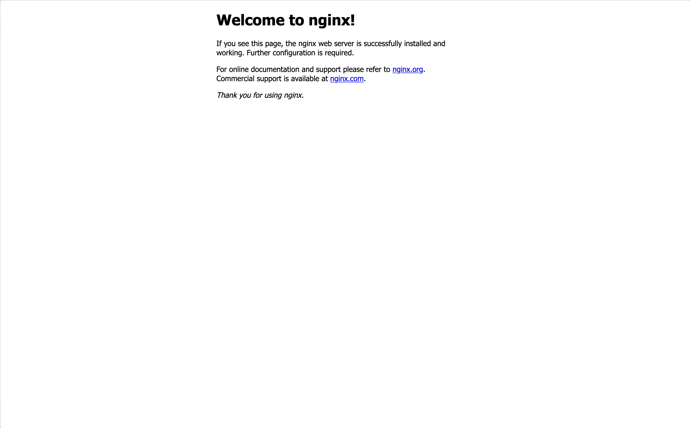

This is the third article in our Docker series. If you haven’t read the previous articles, start with Docker 101: What Are Containers and Why They Matter and The Linux Magic Behind Docker to build the foundation.
Now that you understand what containers are and the Linux technologies that power them, it’s time to get your hands dirty with Docker! In this article, we’ll install Docker and learn the essential commands that form the backbone of container management.
Installing Docker: Choose Your Platform
Docker installation varies by operating system, but the process is straightforward on all platforms. I’ll provide the key steps and link to official guides for detailed instructions.
Docker Desktop (Mac & Windows)
For developers on Mac or Windows, Docker Desktop is the easiest way to get started. It provides a complete development environment with a GUI and includes everything you need.
What you get:
- Docker Engine and CLI
- Docker Compose
- Kubernetes (optional)
- Graphical interface for managing containers
- File sharing between host and containers
Installation:
- Download Docker Desktop from docker.com
- Follow the installer prompts
- Launch Docker Desktop from your Applications folder
- Verify installation:
docker --version
System Requirements:
- Mac: macOS 10.15+ with Apple Silicon or Intel processor
- Windows: Windows 10/11 with WSL 2 enabled (recommended)
Docker Engine (Linux)
For Linux distributions, follow the official installation guides (not comprehensive list):
Your First Docker Command: Hello World
Let’s start with the classic “Hello World” example to verify everything works:
docker run hello-worldWhat just happened? This simple command triggered a complex sequence:
- Image Resolution: Docker looked for the
hello-worldimage locally - Image Download: Since it wasn’t found, Docker pulled it from Docker Hub
- Container Creation: Docker created a new container from the image
- Container Execution: Docker ran the container, which printed a message
- Container Exit: The container completed and stopped
You should see output like this:
Hello from Docker!
This message shows that your installation appears to be working correctly.
...
Understanding the Container Lifecycle
Before diving into commands, let’s understand the four phases of a container’s life:
[Image] → [Created] → [Running] → [Stopped] → [Removed]
Each phase has specific commands and purposes:
Phase 1: Create (docker create)
Creates a container but doesn’t start it. Useful for configuration before running.
# Create a container without starting it
docker create --name my-nginx nginx:latest
# Create with specific configuration
docker create \
--name web-server \
-p 8080:80 \
-e ENVIRONMENT=production \
nginx:latestPhase 2: Start (docker start)
Launches a created container or restarts a stopped one.
# Start the container we created
docker start my-nginx
# Start and see output
docker start -a my-nginxPhase 3: Stop (docker stop)
Gracefully stops a running container.
# Stop the container (sends SIGTERM, waits 10 seconds, then SIGKILL)
docker stop my-nginx
# Stop with custom timeout (in seconds)
docker stop --time 30 my-nginxPhase 4: Remove (docker rm)
Deletes a stopped container permanently.
# Remove the stopped container
docker rm my-nginx
# Force remove a running container
docker rm --force my-nginxIf you try to run docker rm my-nginx while the container is running you’ll have this error
Error response from daemon: cannot remove container "my-nginx": container is running: stop the container before removing or force removeThe docker run Command: Your Swiss Army Knife
If you only learn one Docker command, make it docker run.
This single command does the job of creating, starting, and running a container — all in one go. Whether you’re spinning up a web server or testing a CLI tool, docker run is your gateway to containers.
Basic Syntax
docker run [OPTIONS] IMAGE [COMMAND] [ARG...]At its core, you’re telling Docker:
“Start a new container from this image, and optionally run this command inside it.”
Run a Simple One-Off Command
These examples show how to use Docker like a quick sandbox:
# Run a single command and exit
docker run ubuntu:latest echo 'Hello from Ubuntu!'This creates a temporary Ubuntu container, runs echo, and immediately exits. Great for testing commands or environments.
# Run interactively with terminal
docker run -it ubuntu:latest /bin/bashWith -it, you get an interactive Bash session. You’re now inside the container, just like an isolated VM.
Run in the Background (Detached Mode)
Want your container to keep running after the command finishes? Use detached mode:
# Run detached (background)
docker run -d nginx:latestThis starts an nginx web server in the background. You can check its status with docker ps.
You can also map ports between your host and the container:
# Run with port mapping
docker run -d -p 8080:80 nginx:latestVisit http://localhost:8080 in your browser, and you’ll see the default nginx welcome page.

🐛 Common pitfall: If you don’t expose the container’s ports with
-p, you won’t be able to access it from your browser.
Clean Up Automatically
By default, Docker keeps containers around even after they stop. If you just want to run something and discard it when done, use --rm:
# Remove container when it stops
docker run --rm ubuntu:latest echo "I'll be automatically removed"This is great for quick tests where you don’t want to manage cleanup.
Most Useful Options Explained
Here are some of the most common flags you’ll see used with docker run:
| Option | Description |
|---|---|
-d | Run in background (detached mode) |
-it | Interactive terminal (-i keeps STDIN, -t allocates TTY) |
-p | Publish container port to the host (e.g., -p 8080:80) |
--name | Give your container a custom name |
--rm | Remove container after it stops |
-e | Set environment variables |
-v | Mount a volume or bind mount |
Practical Examples
Here are some real-world ways developers use docker run.
Web server with port mapping:
# Run nginx and access it at http://localhost:8080
docker run -d -p 8080:80 --name web-server nginx:latestQuickly spin up a test server you can access via your browser.
Use Python without installing it locally::
# Get a Python shell
docker run -it python:3.11 pythonInstant Python shell in an isolated container — useful for testing snippets or exploring a new version.
Run an app with environment variables:
# Set environment variables
docker run -e DEBUG=true -e ENV=development my-app:latestEnvironment variables are how most apps receive config at runtime — this is how you’d simulate running your app in different environments.
💡 Official images like
python,postgres, andnginxare maintained by Docker or trusted maintainers. Always review the Docker Hub page to understand tags, variants (e.g.,slim,alpine), and security notices.
TL;DR
docker runis the easiest and most flexible way to work with containers.- Use it for everything from interactive debugging to running full web servers.
- Mastering the key flags (
-it,-d,-p,--rm) will cover 90% of daily use cases.
Monitoring Containers with docker ps
Once you start running containers, you’ll need a way to check what’s going on. That’s where docker ps comes in.
This command gives you a real-time snapshot of your Docker environment: which containers are running, what ports are mapped, when they were started, and more.
Basic Usage
Here are the most common ways to use docker ps:
# Show running containers
docker psThis will list all active containers. If you started a web server like nginx or a database, you’ll see it here.
# Show all containers (running and stopped)
docker ps -aSometimes a container might exit or crash — this shows everything, including containers that are no longer running.
# Show only container IDs
docker ps -qThis is handy when you want to use the output in scripts or with docker rm to clean up multiple containers.
Understanding the Output
When you run docker ps, you’ll see something like this:
CONTAINER ID IMAGE COMMAND CREATED STATUS PORTS NAMES
f2d3c8e4a1b9 nginx:latest "/docker-entrypoint.…" 5 minutes ago Up 5 minutes 0.0.0.0:8080->80/tcp web-server
Let’s break down each column:
- CONTAINER ID: Unique identifier (first 12 characters)
- IMAGE: The image used to create this container
- COMMAND: The command being executed inside the container
- CREATED: When the container was created
- STATUS: Current status (Up = running, Exited = stopped)
- PORTS: Port mappings between host and container
- NAMES: Human-readable name (auto-generated if not specified)
This is your dashboard. If something’s wrong, it usually starts here.
Useful Filtering
When you have lots of containers, filtering becomes essential. Try these:
# Show only running containers
docker ps --filter "status=running"
# Show containers created from specific image
docker ps --filter "ancestor=nginx"This is useful if you’re running multiple projects or want to inspect just your web server containers.
# Custom format for cleaner output
docker ps --format "table {{.Names}}\t{{.Image}}\t{{.Status}}"You can extract just the info you need — perfect for monitoring scripts or better readability.
NAMES IMAGE STATUS
web-server nginx:latest Up About a minuteExecuting Commands in Running Containers
Once a container is running, you might want to inspect it, fix a problem, or just poke around. That’s where docker exec comes in — it lets you run commands inside a running container, just like you’re SSHing into a server.
This is one of Docker’s most powerful tools for debugging, development, and live troubleshooting.
Accessing a Shell Inside a Container
Need to look around inside a container? Start with this:
# Get bash shell in container
docker exec -it container_name /bin/bashNot all containers have Bash. If you get an error, try:
# Use sh if bash isn't available
docker exec -it container_name /bin/shWant ot run commands as root? Add the --user root flag:
# Run as root user
docker exec -it --user root container_name /bin/bash🧠 Use cases: Explore filesystem, view logs, check running services, debug configuration.
Run One-Off Commands Without Entering the Shell
You don’t always need a full shell. docker exec lets you run a quick command and exit:
# Check processes in container
docker exec container_name ps aux
# View files
docker exec container_name ls -la /app
# Install packages for debugging
docker exec container_name apt-get update && apt-get install -y curl
# Test connectivity
docker exec container_name curl http://localhost:80Practical Debugging Example
Let’s say you have a web application that’s not responding correctly:
# See all running processes in the container
docker exec container_name ps aux
# List contents of a folder
docker exec container_name ls -la /app
# Update packages and install curl (if the image has apt)
docker exec container_name apt-get update && apt-get install -y curl
# Test internal HTTP connection (e.g., is Nginx responding?)
docker exec container_name curl http://localhost:80This is super useful for automation, scripting, and CI/CD checks.
Real Debugging Example
Let’s say your local web app isn’t working, and you suspect something’s wrong inside the container.
- Start a test container:
docker run -d -p 8080:80 --name debug-web nginx:latest- Run a health check from inside the container:
docker exec debug-web curl -f http://localhost:80- Drop into the container shell:
docker exec -it debug-web /bin/bash- Once inside, you can:
- Check for config files (
cat /etc/nginx/nginx.conf) - List running processes (
ps aux) - Explore directories or log output
- Install tools (
apt-get install nano curl netcat)
This is your Swiss army knife for live debugging — especially when you’re dealing with custom apps, web servers, or APIs that misbehave.
TL;DR
docker execis like SSHing into a container.- Use it for inspection, debugging, and running one-time commands.
- You can script it or use it interactively depending on your needs.
Viewing Container Logs
When something goes wrong inside a container — or even when everything seems fine — logs are your best friend.
By default, Docker captures anything written to stdout and stderr inside the container. This includes error messages, print statements, startup logs, and more.
Whether you’re running a web server, a database, or a custom app, checking logs is usually the first step in debugging.
View Logs from a Container
Start with the basics:
# View all logs
docker logs container_nameThis prints everything the container has output since it started.
Follow Logs in Real Time
Just like tail -f, you can stream logs as they come in:
# Follow logs in real-time (like tail -f)
docker logs -f container_nameUse this when you’re:
- Watching app behavior after a restart
- Debugging startup issues
- Monitoring for crashes in real-time
You can also include timestamps:
# Show timestamps
docker logs -t container_nameView Only Recent Logs
Sometimes you only care about the latest activity:
# Show only recent logs
docker logs --tail 50 container_nameThis is especially useful for noisy containers like web servers or Kafka brokers.
Time-based Filtering
# Logs from the last hour
docker logs --since 1h container_name
# Logs from the last 30 minutes
docker logs --since 30m container_name
# Logs between specific times
docker logs --since "2024-01-01T10:00:00" --until "2024-01-01T11:00:00" container_nameGreat for post-mortem debugging: “What happened between 2PM and 2:30PM?”
Practical Debugging with Logs
Here are a few useful log techniques you’ll reach for again and again:
# Search for errors (case-insensitive)
docker logs container_name 2>&1 | grep -i error
# Monitor for specific patterns
docker logs -f container_name | grep "ERROR\|WARN"
# Save logs to file
docker logs container_name > container_logs.txt 2>&1You can open the saved log file in your editor or send it to a teammate when asking for help.
🧠 In production, you’ll often use Docker with log drivers (e.g., syslog, fluentd, json-file) or external log collectors like Loki, ELK, or Datadog. We’ll cover logging strategies in a future article.
Putting It All Together: A Complete Example
Now that you’ve learned the core Docker commands, let’s walk through a realistic scenario: running a PostgreSQL database inside a container.
This example ties together everything we’ve covered — from run, logs, and exec, to cleanup.
# 1. Create and run a PostgreSQL database
docker run -d \
--name postgres-db \
-e POSTGRES_PASSWORD=mypassword \
-e POSTGRES_USER=myuser \
-e POSTGRES_DB=myapp \
-p 5432:5432 \
postgres:13You’ve just created a containerized database, accessible on port 5432. Let’s inspect it:
# 2. Verify it's running
docker ps
# 3. Check logs to confirm startup
docker logs postgres-dbNow connect to the running container and use psql to talk to the database:
# 4. Connect to the database
docker exec -it postgres-db psql -U myuser -d myappInside psql, create and query a table:
# 5. (Inside the database shell) Create a table
CREATE TABLE users (id SERIAL PRIMARY KEY, name VARCHAR(100));
INSERT INTO users (name) VALUES ('Docker User');
SELECT * FROM users;
\qNow let’s stop and restart the container:
# 6. Stop the container
docker stop postgres-db
# 7. Confirm it's stopped
docker ps -a
# 8. Restart the container
docker start postgres-db
# 9. Verify data persisted (it won't, we didn't use volumes!)
docker exec -it postgres-db psql -U myuser -d myapp -c "SELECT * FROM users;"You’ll notice the data is gone — and that’s by design. Docker containers are ephemeral unless you use volumes.
# 10. Clean up
docker stop postgres-db
docker rm postgres-dbYou’ve now built, used, debugged, restarted, and cleaned up a real Dockerized service!
Common Beginner Mistakes (And How to Avoid Them)
Even experienced developers trip over these when first using Docker. Here’s what to watch out for:
1. Forgetting to Remove Containers
Symptom: You run docker ps -a and see dozens of old, exited containers.
Solution: Use --rm for temporary work, and clean up regularly:
# Remove all stopped containers
docker container prune
# Remove container after it stops
docker run --rm ubuntu:latest echo "I'll be cleaned up automatically"2. Not Understanding Data Persistence
Problem: Data disappears when containers are removed. Solution: You’ll learn about volumes and bind mounts in the next article. For now, just know containers are meant to be stateless unless you configure storage.
3. Port Conflicts
Problem: Multiple containers trying to use the same host port. Solution: Use different host ports or let Docker assign random ports:
# Specific port mapping
docker run -d -p 8080:80 nginx:latest
# Let Docker choose a random port
docker run -d -P nginx:latest4. Missing -it Flags for Interactive Sessions
Problem: Can’t interact with containers that need input.
Solution: Use -it flags for interactive containers:
# This won't work as expected
docker run ubuntu:latest /bin/bash
# This will give you an interactive shell
docker run -it ubuntu:latest /bin/bashEssential Docker Commands Cheat Sheet
Here’s a quick reference to the most common and useful Docker commands. Use this as a memory aid or learning recap.
# Container Lifecycle
docker create [OPTIONS] IMAGE # Create container
docker start [OPTIONS] CONTAINER # Start container
docker stop [OPTIONS] CONTAINER # Stop container
docker rm [OPTIONS] CONTAINER # Remove container
docker run [OPTIONS] IMAGE [COMMAND] # Create and start container
# Monitoring
docker ps [OPTIONS] # List containers
docker logs [OPTIONS] CONTAINER # View container logs
docker stats [OPTIONS] [CONTAINER...] # View resource usage
# Interaction
docker exec [OPTIONS] CONTAINER COMMAND # Execute command in container
# Cleanup
docker container prune # Remove stopped containers
docker system prune # Remove unused containers, images, networksPractice What You’ve Learned
Want to get hands-on with all the examples and try a few bonus exercises?
I’ve created a companion GitHub repository with ready-to-run scripts, troubleshooting examples, and beginner-friendly Docker challenges:
What’s inside:
- ✅ Step-by-step scripts for each command (docker run, exec, logs, etc.)
- 🧠 Exercises with real-world containers (Nginx, PostgreSQL, Ubuntu, Python)
- 🔍 Debugging tools and logs
- 🗑 Cleanup and best practices
How to Get Started
- Clone the repository:
git clone https://github.com/p-munhoz/docker-fundamentals-starter.git
cd docker-fundamentals-starter-
Navigate to a folder (e.g., 03-basic-commands/)
-
Make the scripts executable:
chmod +x *.sh- Run the scripts and follow the Markdown guides:
./create-run-stop-remove.shTip: Practicing in a local terminal is the best way to truly understand Docker behavior.
Let me know if you’d like me to update this with your actual GitHub link or tweak the tone/style.
What’s Next?
Congratulations! You now have the fundamental skills to work with Docker containers. You can create, run, monitor, and debug containers – the core skills every Docker user needs.
In our next article, we’ll tackle a crucial topic that trips up many beginners: data persistence. You’ll learn:
- Why container data disappears and how to prevent it
- Docker volumes for managed persistent storage
- Bind mounts for development workflows
- Best practices for database and application data
- Backup and recovery strategies
The examples we’ve covered here assumed you’re okay with losing data when containers are removed. In real applications, that’s rarely acceptable, so understanding data persistence is crucial for production use.
Ready to practice? Try spinning up different types of containers (databases, web servers, development environments) and explore them with the commands you’ve learned. The more you practice these fundamentals, the more intuitive Docker will become!